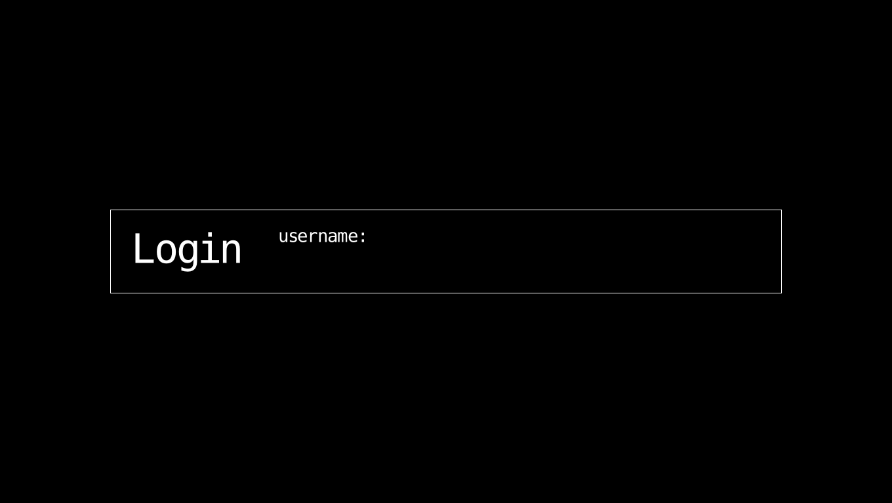
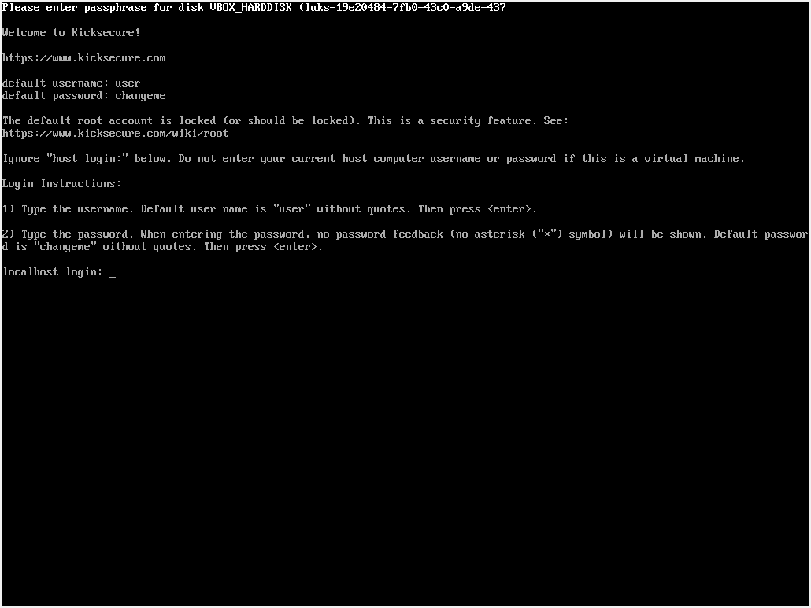

We believe security software like Kicksecure needs to remain Open Source and independent. Would you help sustain and grow the project? Learn more about our 14 year success story and maybe DONATE!
UserDocumentationTimezonePrevious page: UserIndex page: DocumentationNext page: TimezoneLogin Security
- Default Passwords
- Passwords
- Account Management
- Login
- Login Spoofing
- Safely Use Root Commands
sysmaintAccount- System Maintenance Panel
- Unrestricted Admin Mode
- Protection against Physical Attacks
- User Account Isolation (developers)
user-sysmaint-split (developers)- Polkit (formerly PolicyKit) /
pkexec - privleap /
leaprun
The user can set or change the password for Linux user accounts in Kicksecure, if this is useful for the user's threat model based on this default passwords information.


This page provides detailed information about the Kicksecure login screen, how to configure it, and how to log in securely.
Login Security Concepts
By default, Kicksecure provides a user account, user,
with graphical user interface (GUI) autologin
enabled if applicable, and no password set. When using a system with a
GUI, Kicksecure will boot directly into a graphical desktop when powered
on. For many users and situations, this configuration is not a security
hazard because:
- Single-user machines: Desktop and laptop systems are generally single-user machines and do not need to authenticate multiple human users. Users of a single-user machine are expected to keep their machine physically secure from in-person attackers.
- Multi-user configuration: For machines that aren't single-user, the system administrator will generally be the first person to use the machine after installation and will have the opportunity to configure the system's user accounts to meet the needs of all users.
- Weak login screen protection: The login screen is usually only a weak security barrier. If Full Disk Encryption (FDE) is not used, a malicious individual can gain access to the machine's data by simply booting a live ISO or stealing the system's storage drive. Even if FDE is used, a sophisticated attacker with sufficient time can likely bypass the login screen if they gain physical access to the device while it is powered on.
- FDE makes login screen redundant: If using the Kicksecure ISO to install Kicksecure onto a machine, FDE is enabled by default. This requires the user to authenticate before the system will boot, thus making the login screen redundant in most single-user scenarios. Authentication is done during initramfs (initramfs-tools or dracut) Based Encryption Password Prompt.
- Virtual machines and host security: If using Kicksecure in a Virtual Machine, the VM's login security is not as important as the host system's login security. There are numerous ways to modify a virtual machine's state from the host system, allowing an attacker with access to an unlocked host machine to bypass a virtual machine's login screen. Virtual machine users are expected to keep their host system physically secure from in-person attackers.
However, there are situations in which it is valuable to require password authentication for administrative actions or for login purposes. Users should be aware of their threat model and adjust login settings accordingly. Users interested in this topic should read the Default Passwords and Protection against Physical Attacks wiki pages.
Configuring GUI Autologin
Platform specific.
- Kicksecure: Applicable. See below.
- Kicksecure-Qubes: Users can skip this section, except for HVM Qube. [1]
Host operating system (OS) versus virtual machine (VM).
- Host operating system:
- Simple login screen: Disabling autologin can be useful if the user wants to enable a login screen.
- No full disk encryption: Note, the login screen is not providing Full Disk Encryption (FDE). The purpose of the login screen is elaborated in chapter Login Screen.
- VMs: It is not very useful to disable autologin to enable a login screen inside VMs. It's much more secure to have a login screen on the host operating system.
Automatic Autologin Configuration
To view which user accounts on the system have autologin enabled, run systemcheck. This will show you a Physical Security Check table, indicating which users on the system are not password protected and/or have autologin enabled.
Only one normal user account can have autologin enabled at once. The
reason for this is fairly obvious - if two users had autologin enabled
at the same time, which user would be automatically logged into? For
this reason, if you enable autologin for one user account when autologin
is already enabled for a different user account, autologin will be
disabled for that different user account. The only exception to this
rule is if user-sysmaint-split
is installed. In this case, the sysmaint user account can
have autologin enabled or disabled independently of the other user
accounts. This is because the sysmaint account is only
accessible when the system is booted in PERSISTENT mode - SYSMAINT
session.
To enable or disable autologin on a user account, you can use the
autologinchange utility.
1 Sysmaint Notice

- A
If using
user-sysmaint-split: The user must boot into the sysmaint session. For details and instructions on how to do so, see user-sysmaint-split. - B If using unrestricted admin mode: This sysmaint notice does not apply. Continue with the steps below.
2
Launch autologinchange.
- A
System Maintenance Panel: You can do this by clicking the
Manage GUI Autologinbutton in the System Maintenance Panel. - B
Terminal: You can also run the tool by running the following
command in a terminal:
- sudo autologinchange
3
autologinchange will display a list of user accounts on the
system. Identify the user you want to enable or disable autologin
for.
4 Type the user account's name and press Enter.
5 You will be told whether autologin is currently enabled or disabled for the current user account. To toggle autologin on the selected account, press y, then press Enter.
6 Done.
Autologin has now been toggled on the specified user account.
Manual Autologin Configuration
It is strongly recommended that you do not attempt to manually configure autologin when using Kicksecure 18 and higher. This procedure is Unsupported. For details about why, see the footnote.[2]
Configuring Passwords
 Platform specific.
Platform specific.
- Kicksecure: Applicable. See below.
- Kicksecure-Qubes: Not applicable. Users can skip this section. [3]
1 Default password notice.

- Default username: user
- Default password: No password required. (Passwordless login.) [4]
2 Change Keyboard Layout if necessary.
3 Review Test Keyboard Layout before proceeding further.
5 Sysmaint Notice

- A
If using
user-sysmaint-split: The user must boot into the sysmaint session. For details and instructions on how to do so, see user-sysmaint-split. - B If using unrestricted admin mode: This sysmaint notice does not apply. Continue with the steps below.
6
sudo password notice.
There is no separate sudo password. sudo
uses the same password as the user account that is invoking
sudo. [5] For example:
- user-sysmaint-split: Changing the password for
account
sysmaintwill also change thesudopassword for accountsysmaint. - unrestricted admin mode: Changing the password for
account
userwill also change thesudopassword, provided the accountuseris authorized to usesudo.
7
Start pwchange.
Open a terminal (such as QTerminal Emulator) or start
pwchange using the System Maintenance Panel.
- A
user-sysmaint-split:
- 1
Using the System Maintenance Panel: You can change user passwords
using the
Manage Passwordsbutton in the System Maintenance Panel. TheManage Passwordsbutton will simply start thepwchangeutility. - 2 Terminal: Alternatively, you can also change user passwords from a terminal. A terminal can be started using the System Maintenance Panel.
- 1
Using the System Maintenance Panel: You can change user passwords
using the
- B
Unrestricted
admin mode: Use any method to start any terminal. For
example:
Start menu→Applications→System→Terminal
8 Test command.
Run a test command with administrative ("root") rights by
using sudo.
This is only a simple test to confirm that the user can currently escalate to administrative rights. [6] Type the following command in the terminal and press .
sudo whoami
Expected output.
root9 Change a Linux user account password. [7]
sudo pwchange
pwchange will display a prompt.
What user's password do you want to change?Type the account name such as user or
sysmaint and then press .
Follow the instructions by pwchange.
10 Root password.
No changes required. Optional. For details, see root account in Kicksecure.
11 Done.
The procedure of changing passwords is complete.
Another option is to boot into recovery mode and change passwords there.
Graphical Login Screen
For graphical user interface (GUI).
Platform specific.
- Kicksecure: Applicable. See below.
- Kicksecure for Qubes: Mostly, not applicable except if using a Qubes HVM. This is up to the host operating system, Qubes, not Kicksecure.
A login screen can be provided by a login manager. For example,
greetd + wlgreet is the login manager used by
default in Kicksecure.
Figure: greetd +
wlgreet login manager
Console Login Screen
For command line interface (CLI).
What is a virtual console? See Virtual Console.
Login Instructions for Virtual Console
Platform specific.
- Kicksecure: Applicable. See below.
- Kicksecure-Qubes: Mostly, not applicable except if using a Qubes HVM. This is up to the host operating system, Qubes, not Kicksecure.
Figure: virtual console login screen
1 Type the username.
The default username is: user. Press
Enter
after typing the username.
2 Type the password.
If a password has been set, type it and press Enter.
Note: No feedback (such as asterisks "*") will be
shown when typing the password.
3 Done.
Login on the virtual console login screen has been completed.
Notes
- The default root account is locked for security reasons. For more information, visit the root account documentation.
- If you are using a virtual machine, ignore any
host login:prompts. Do not enter your host computer username or password.
Troubleshooting
- Forgot Username or Password: If you have forgotten your username or password, please refer to the Recovery page for steps on recovering your account.
See Also
- Login Screen
- Learn more about default passwords, when it is useful to set a password, see Default Passwords.
/etc/issuefile- Learn more about securing your Kicksecure installation by visiting our System Hardening Checklist
Footnotes
- Except for desktop HVM Qube, virtual machines in Qubes OS do not use a traditional GUI login mechanism, and thus do not have a concept of GUI autologin.
- This is because Kicksecure uses
greetd+wlgreetto provide a display manager.greetdsupports being configured for automatic login, but it only supports a single configuration file, whereas Kicksecure requires a drop-in configuration directory. Kicksecure works around this by using drop-in configuration directories thatgreetdandwlgreetdo not understand by default. It then uses a special tool (build-config-file) to build the config directories into the single config files needed bygreetdandwlgreet.
This means that Kicksecure assumes that it has total control over the config files forgreetdandwlgreet. Normal manual configuration is likely to be overwritten, and manual configuration would be entirely specific to Kicksecure. The manual configuration mechanism is also subject to change. The supported way of configuring autologin in Kicksecure is theautologinchangetool documented above, so manual autologin configuration is not supported. - By default, Qubes does not require a password for superuser access. See also: https://www.qubes-os.org/doc/vm-sudo/
- Rationale for Change from Default Password changeme to Empty Default Password
- This is the usual Debian /
sudodefault and Unspecific to Kicksecure. - This is to avoid falsely suspecting
pwchangeas the cause of issues, while in fact the issue lies withsudoauthentication. - * Using
pwchange. */usr/sbin/pwchangesource code. * Alternatively, Debian standard command: sudo passwd user While usingpasswdand typing the password, it will not appear on the screen, nor will the asterisk sign (*) be visible. This is normal behavior and does not mean your keyboard isn't working. It is necessary to type blindly and trust the procedure.
Categories: Documentation